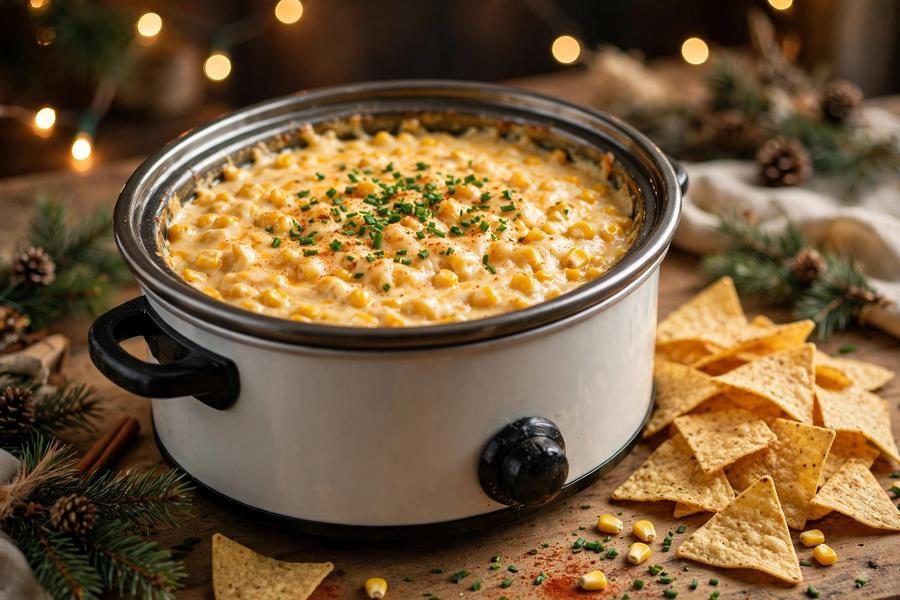
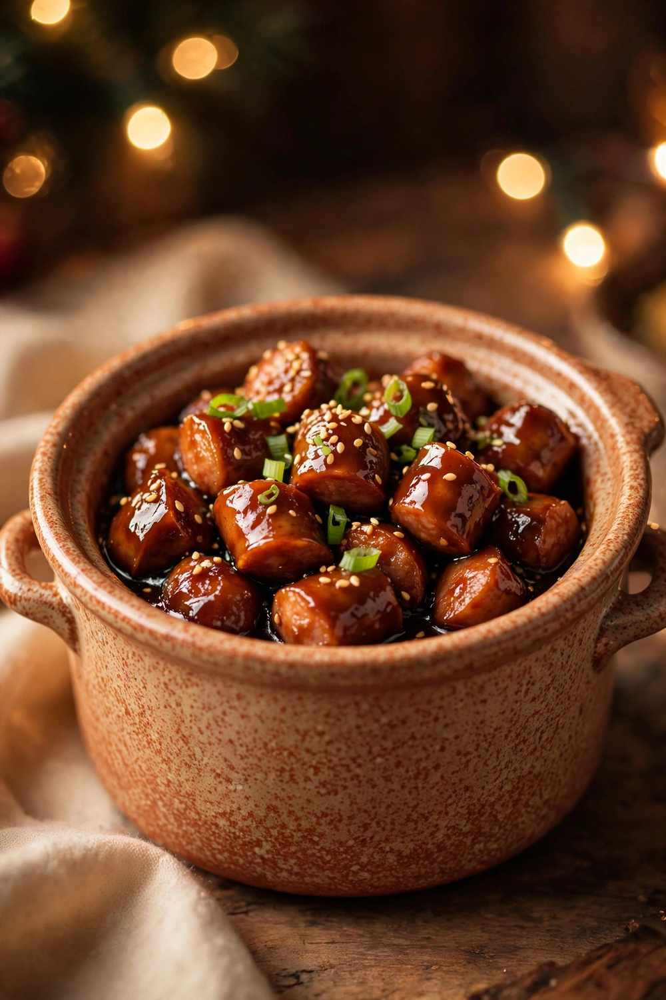
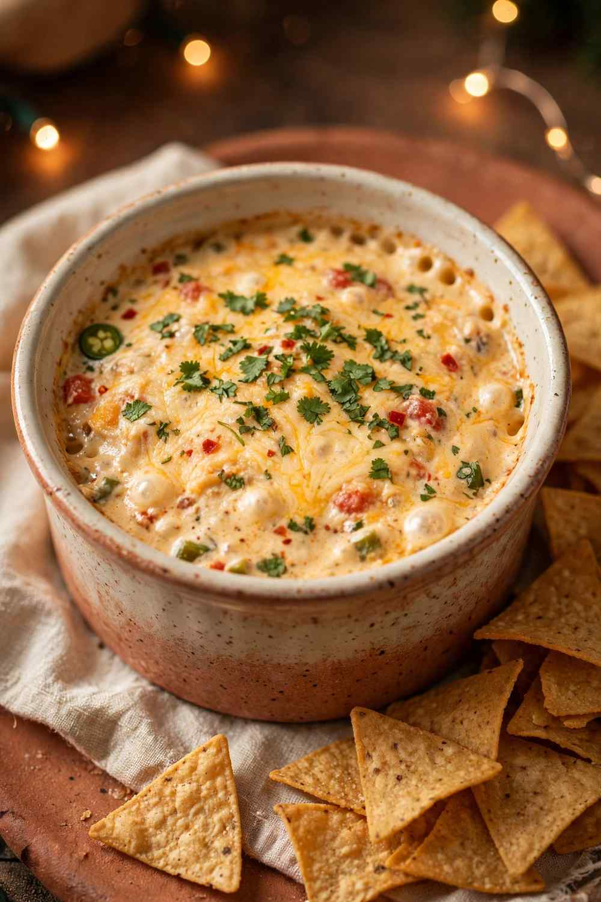
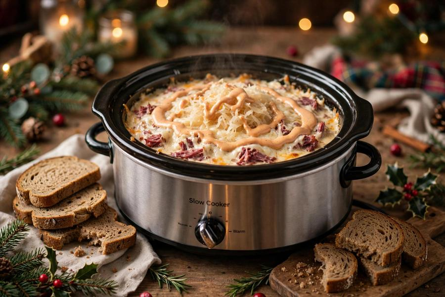
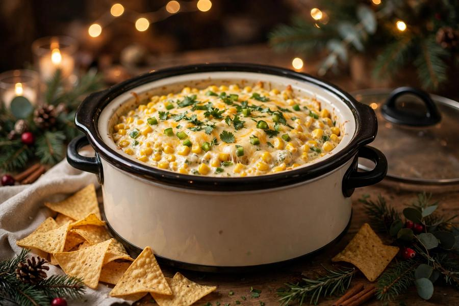
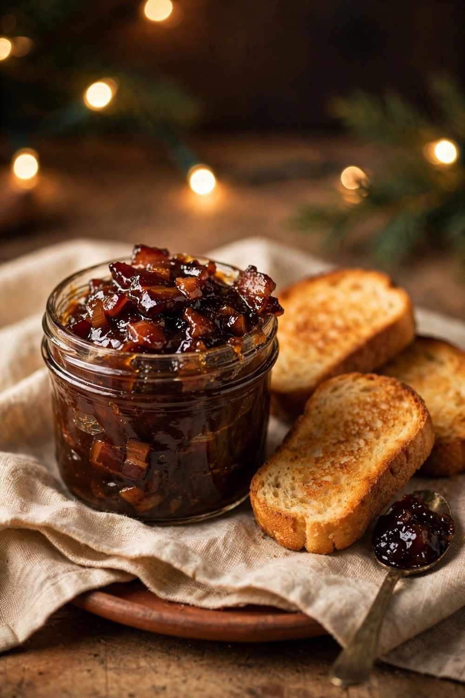
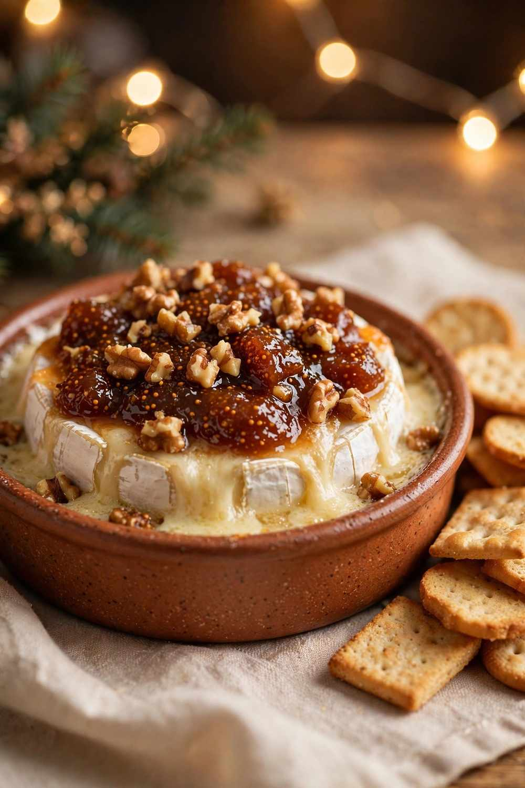
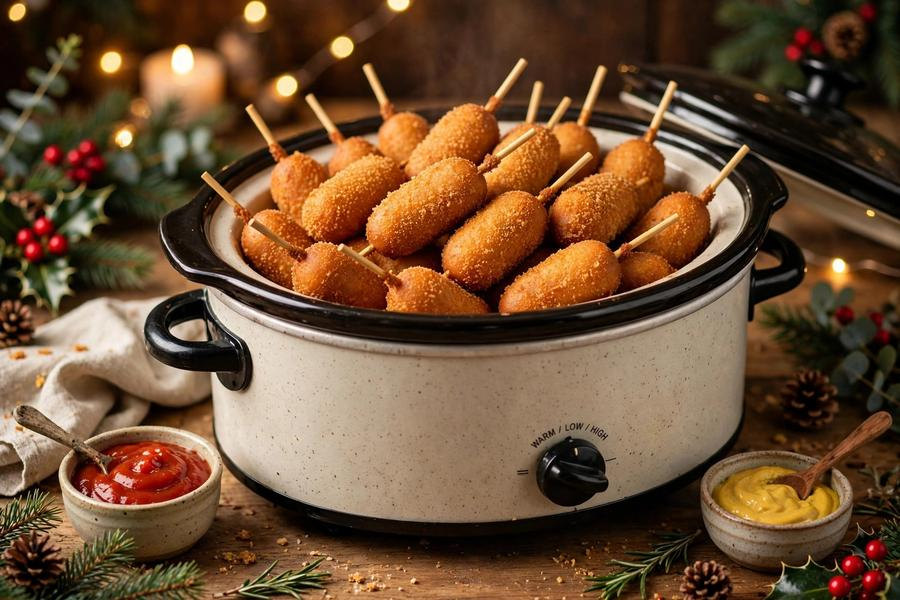
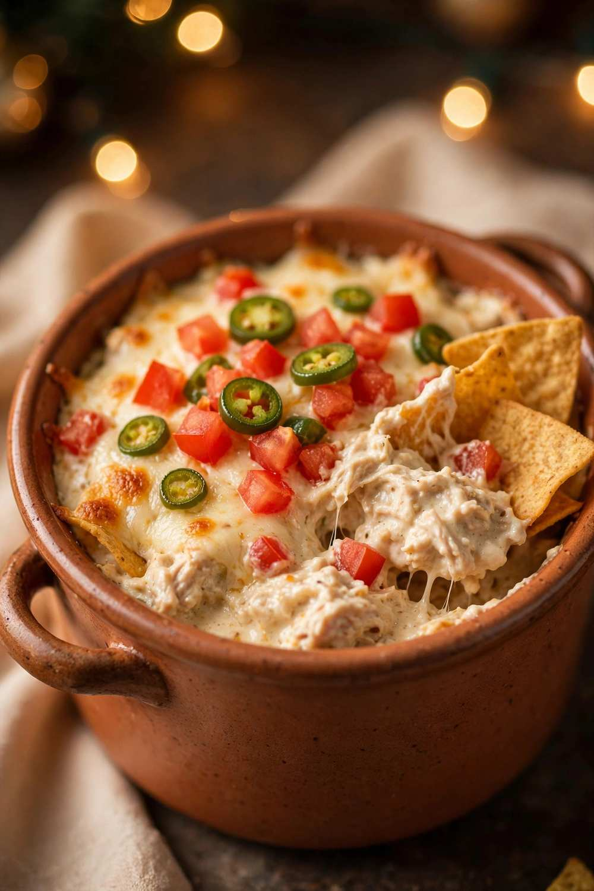
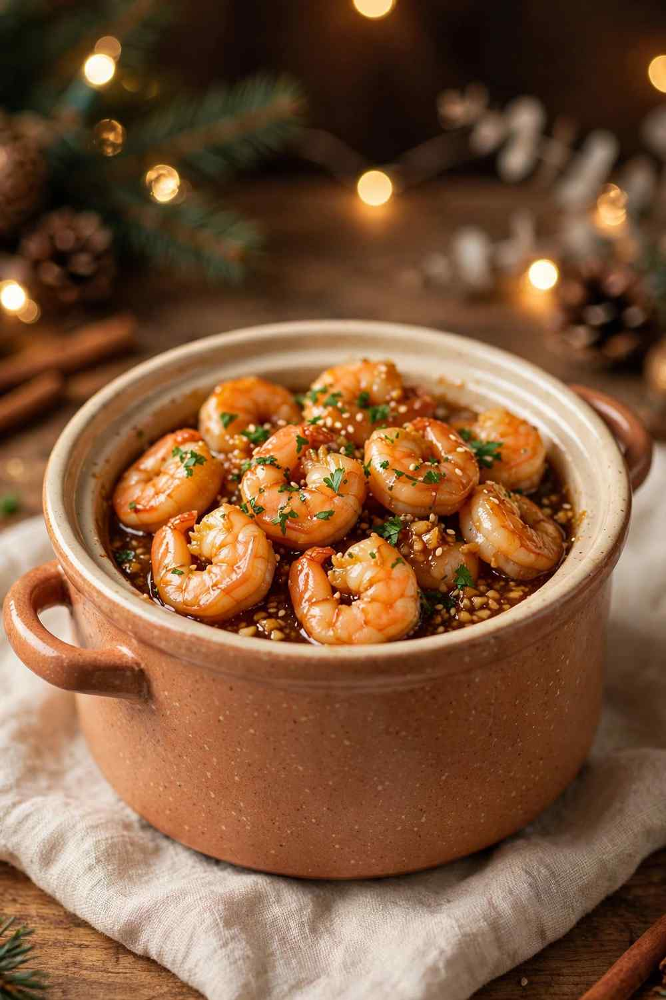

20+ Crockpot Christmas Appetizers for Parties
📌 Save to Pinterest
A Christmas party runs on food that stays warm without a cook watching it. This roundup gathers twenty crockpot Christmas appetizers for parties — slow cooker dips, sliders, wings and bites that hold on warm all night, so you can actually enjoy your own party. Fill the slow cookers before the first guest arrives, set out the chips, rolls and toothpicks, and let the crockpot do the serving.
How to plan a crockpot party spread
Plan one dip, one slider or sandwich, and one finger food — that trio covers every guest. Dips hold best in a small slow cooker set to warm, and they reheat well, so make them first. Sliders and pulled pork feed a crowd from a single pot, and wings and drumsticks disappear fast, so make a double batch if your slow cooker is big enough. Keep toothpicks, small plates and napkins right beside each pot, and label anything spicy so guests know what they are reaching for.
Good to know: Everything is written in American English, and measurements use US customary units — cups, tablespoons, and Fahrenheit — for cooks in the United States. Always follow safe food-handling guidance, and check labels for allergens when cooking for others.
Food safety: cook poultry to 165°F (74°C) and ground sausage to 160°F (71°C). Cook shrimp until opaque. Heat pre-cooked smokies, sausage and corn dogs until steaming hot throughout. Never cook frozen meat in a slow cooker — thaw it first — and keep the lid on while cooking so the slow cooker stays hot enough. Refrigerate leftovers promptly. Check with a food thermometer.
Dips, smokies & sausage bites
The warm dips and saucy bites that anchor any party table — scoopable, shareable and easy to keep warm.
1. Slow Cooker Cheesy Corn Dip

Sweet corn kernels melt into a warm, creamy dip of cream cheese, sharp cheddar, and sour cream, with a fresh jalapeño and a spoonful of chili powder for gentle heat. It turns thick, scoopable, and golden in the slow cooker, and it holds beautifully on warm all evening. Set it out with tortilla chips and watch it disappear fast.
Ingredients
- 3 cups corn kernels
- 8 oz cream cheese
- 1 cup shredded cheddar
- 1/2 cup sour cream
- 1 jalapeño
- 1 tsp chili powder
- tortilla chips
Directions
- Dice the jalapeño finely, removing the seeds and ribs for a milder dip.
- Cut the cream cheese into cubes, then add the corn, cream cheese, cheddar, sour cream, diced jalapeño, and chili powder to a slow cooker.
- Stir until everything is evenly mixed and the cream cheese is spread through the corn.
- Cover and cook on low for 2 hours, keeping the lid on so the slow cooker stays hot.
- Halfway through, lift the lid and stir once, scraping the sides so the cheese melts smoothly.
- Stir again at the end until the dip is thick, creamy, and evenly golden.
- Switch to warm, set out tortilla chips beside the pot, and serve hot, stirring now and then to keep it smooth.
2. Slow Cooker Buffalo Cauliflower Bites

Cauliflower florets turn tender in the slow cooker, coated in buttery buffalo sauce with a touch of garlic powder for a spicy, saucy bite that tastes like wings without the meat. They are fiery, tangy, and crowd-friendly, with cool ranch and crisp celery sticks alongside to calm the heat. Perfect finger food for a Christmas party table.
Ingredients
- 1 head cauliflower
- 1/2 cup buffalo sauce
- 2 tbsp butter
- 1 tsp garlic powder
- 1/4 cup ranch dressing
- celery sticks
Directions
- Cut the cauliflower into even, bite-size florets, about 1 to 1 1/2 inches across, so they cook at the same rate.
- Place the florets in a slow cooker, spread in a single layer as much as possible.
- Melt the butter, then whisk in the buffalo sauce and garlic powder until smooth.
- Pour the sauce over the cauliflower and toss gently with tongs until every floret is coated.
- Cover and cook on low for 2 hours, until the cauliflower is tender when pierced with a fork but still holds its shape.
- Stir gently to coat the bites again in the sauce at the bottom, then switch the slow cooker to warm.
- Serve with ranch dressing for dipping and celery sticks on the side.
3. Slow Cooker Cocktail Smokies in Cranberry Barbecue Sauce

Little cocktail smokies simmer in a sweet-tart sauce of cranberry, barbecue sauce, brown sugar, and chili powder until they are glossy, sticky, and steaming hot. The cranberry gives them a festive ruby shine and a bright tang that cuts the richness. They are the easiest hands-off party bite: one pot, one stir, and a bowl of toothpicks.
Ingredients
- 2 lbs cocktail smokies
- 1 can (14 oz) cranberry sauce
- 1 cup barbecue sauce
- 2 tbsp brown sugar
- 1 tsp chili powder
Directions
- Spoon the cranberry sauce, barbecue sauce, brown sugar, and chili powder into a slow cooker.
- Stir the sauce well until the cranberry sauce is broken up and everything is evenly combined.
- Add the cocktail smokies and stir gently until every smokie is coated in the sauce.
- Cover with the lid and cook on low for 3 hours, keeping the lid on so the slow cooker stays hot enough.
- About halfway through, lift the lid and stir once, scraping the bottom so the sauce does not catch and the smokies heat evenly.
- Stir again at the end, until the smokies are glossy, coated in thick sauce, and steaming hot throughout.
- Switch the slow cooker to warm, set a cup of toothpicks beside it, and serve the smokies straight from the pot.
Food safety: heat the smokies until steaming hot throughout.
4. Slow Cooker Teriyaki Sausage Bites

Smoked sausage slices turn sticky-sweet in the slow cooker, glazed in teriyaki sauce and brown sugar until they shine. Toasted sesame seeds and fresh green onions finish them with crunch and color. They are salty, sweet, and impossible to eat just one of, and they stay warm in the pot all night long.
Ingredients
- 2 lbs smoked sausage
- 1/2 cup teriyaki sauce
- 1/4 cup brown sugar
- 1 tbsp sesame seeds
- 2 green onions
Directions
- Slice the smoked sausage into even 1-inch pieces, so they cook evenly and are easy to spear with a toothpick.
- Add the sausage pieces, teriyaki sauce, and brown sugar to a slow cooker.
- Stir well until the sugar is dissolved into the sauce and every piece of sausage is coated.
- Cover with the lid and cook on low for 3 hours, keeping the lid on so the slow cooker stays hot.
- About halfway through, lift the lid and stir once, scraping the bottom so the glaze thickens evenly and nothing sticks.
- Thinly slice the green onions while the sausage finishes cooking.
- Stir the sausage one last time, then sprinkle the sesame seeds and sliced green onions over the top and serve warm, straight from the pot.
Food safety: heat the sausage until steaming hot throughout.
5. Slow Cooker Pizza Dip

This dip has all the flavor of a pepperoni pizza, made scoopable: a creamy base of cream cheese under pizza sauce, melted mozzarella, crisp-edged pepperoni, and Italian seasoning. It bubbles up in the slow cooker until hot and stretchy, ready for breadsticks. It is the dip kids and adults both crowd around first.
Ingredients
- 8 oz cream cheese
- 1 cup pizza sauce
- 1 cup shredded mozzarella
- 1/2 cup pepperoni
- 1 tsp Italian seasoning
- breadsticks
Directions
- Soften the cream cheese at room temperature for about 15 minutes, so it spreads easily.
- Spread the cream cheese in an even layer across the bottom of a slow cooker, pressing it into the corners with a spatula.
- Spoon the pizza sauce over the cream cheese and spread it gently to the edges without mixing the layers.
- Sprinkle the shredded mozzarella evenly over the sauce, then scatter the pepperoni on top and dust with Italian seasoning.
- Cover with the lid and cook on low for 2 hours, until the cheese is fully melted and the dip is bubbling at the edges.
- Give the dip a gentle stir if you like it mixed, or leave the layers for scooping, then switch the slow cooker to warm.
- Set out breadsticks beside the pot and serve the dip hot, while the cheese is still stretchy.
6. Slow Cooker Enchilada Dip

Shredded chicken, enchilada sauce, cream cheese, and cheddar melt together into a creamy, cheesy dip with a mild kick from green chiles. It is rich, scoopable, and deeply comforting, with just enough spice to keep people coming back. Serve it hot with tortilla chips and let the slow cooker keep it warm.
Ingredients
- 2 cups shredded cooked chicken
- 1 can (10 oz) enchilada sauce
- 8 oz cream cheese
- 1 cup shredded cheddar
- 1 can (4 oz) green chiles
- tortilla chips
Directions
- Cut the cream cheese into cubes so it melts evenly, then add the shredded chicken, enchilada sauce, cream cheese, shredded cheddar, and green chiles to a slow cooker.
- Stir everything together until the ingredients are evenly mixed and the cream cheese is spread through the chicken.
- Cover with the lid and cook on low for 2 hours, keeping the lid on so the slow cooker stays hot.
- About halfway through, lift the lid and stir once, scraping the sides so the cheese melts smoothly and nothing sticks.
- Stir again at the end until the dip is thick, creamy, and evenly combined, with the cheese fully melted.
- Switch the slow cooker to warm, set out a bowl of tortilla chips beside it, and serve the dip hot, stirring now and then to keep it smooth.
7. Slow Cooker Black Bean Dip

Black beans, cream cheese, salsa, and cheddar melt into a smoky, creamy dip, seasoned with cumin and chili powder for a warm Southwestern flavor. One can of beans is mashed for body while the other stays whole for texture. It is hearty, scoopable, and perfect with tortilla chips on a Christmas party table.
Ingredients
- 2 cans (15 oz) black beans
- 8 oz cream cheese
- 1 cup salsa
- 1 cup shredded cheddar
- 1 tsp cumin
- 1 tsp chili powder
- tortilla chips
Directions
- Drain and rinse one can of black beans in a colander, and drain the second can.
- Mash the second can of beans in a bowl with a fork or potato masher until mostly smooth, with a few chunks left for texture.
- Cut the cream cheese into cubes, then add all the beans, cream cheese, salsa, shredded cheddar, cumin, and chili powder to a slow cooker.
- Stir everything together until the ingredients are evenly mixed.
- Cover with the lid and cook on low for 2 hours, keeping the lid on so the slow cooker stays hot.
- About halfway through, lift the lid and stir once, scraping the sides so the cheese melts smoothly.
- Stir again at the end until the dip is thick, creamy, and evenly combined. Switch to warm and serve hot with tortilla chips.
Wings, sliders & pulled pork
Sticky wings and saucy sliders — the hearty half of the party spread.
8. Slow Cooker Chicken Wings in Cranberry Chipotle Sauce

Chicken wings cook low and slow in a glossy sauce of cranberry, smoky chipotle peppers, honey, soy sauce, and garlic until the meat is fall-off-the-bone tender. The sauce is sweet heat at its best: bright cranberry, deep smoke, and a honeyed finish. Spoon the sauce over the wings and serve them hot.
Ingredients
- 3 lbs chicken wings
- 1 can (14 oz) cranberry sauce
- 2 chipotle peppers in adobo
- 1/4 cup honey
- 2 tbsp soy sauce
- 2 garlic cloves
Directions
- Add the cranberry sauce, chipotle peppers, honey, soy sauce, and garlic cloves to a blender and blend until completely smooth.
- Taste the sauce and add a little more honey if you want it sweeter, or another chipotle for more heat.
- Pat the chicken wings dry with paper towels, then place them in a slow cooker.
- Pour the sauce over the wings and toss gently with tongs until every wing is evenly coated.
- Cover with the lid and cook on low for 4 hours, until the wings are tender and the meat pulls easily from the bone.
- Stir the wings gently to coat them again in the sauce, then check the thickest wing with a food thermometer.
- Switch the slow cooker to warm, spoon the sauce over the wings, and serve warm with plenty of napkins.
Food safety: cook the chicken to 165°F (74°C) — check with a food thermometer.
9. Slow Cooker Barbecue Chicken Sliders

Chicken breasts slow cook in barbecue sauce with brown sugar and smoked paprika until they shred into tender, saucy strands. Piled onto soft slider rolls with cool, crunchy coleslaw, they are sweet, smoky, and just messy enough to feel like a party. One pot feeds a crowd with almost no work.
Ingredients
- 2 lbs chicken breasts
- 1 1/2 cups barbecue sauce
- 1 tbsp brown sugar
- 1 tsp smoked paprika
- 12 slider rolls
- coleslaw
Directions
- Place the chicken breasts in a slow cooker in a single layer, so they cook evenly.
- In a small bowl, stir together the barbecue sauce, brown sugar, and smoked paprika until the sugar dissolves.
- Pour the sauce over the chicken, turning the breasts once so both sides are coated.
- Cover with the lid and cook on low for 5 hours, until the chicken is tender and shreds easily with a fork.
- Lift the chicken out onto a cutting board and shred it with two forks, pulling the meat into thin strands.
- Return the shredded chicken to the slow cooker and stir it back into the sauce until every strand is coated.
- Split the slider rolls, pile the saucy chicken onto the bottom halves, top with a spoonful of coleslaw, and serve warm.
Food safety: cook the chicken to 165°F (74°C) — check with a food thermometer.
10. Slow Cooker Pulled Pork Sliders with Coleslaw

A pork shoulder rubbed with brown sugar and garlic powder slow cooks for eight hours until it falls apart into tender, juicy strands. Stirred with barbecue sauce and piled onto soft rolls with crunchy coleslaw, it is sweet, smoky, and rich. This is the slider that feeds a whole party from a single pot.
Ingredients
- 1 pork shoulder (3 lbs)
- 1 cup barbecue sauce
- 1 tbsp brown sugar
- 1 tsp garlic powder
- 12 slider rolls
- 2 cups coleslaw
Directions
- Pat the pork dry, then rub it all over with the brown sugar, garlic powder, salt, and pepper, pressing the seasoning into the meat.
- Place the pork in a slow cooker, fat side up if it has a fat cap, and put the lid on.
- Cook on low for 8 hours, keeping the lid on, until the pork shreds easily with a fork.
- Lift the pork onto a cutting board and rest it for 10 minutes, so the juices settle.
- Shred the pork with two forks, pulling it into strands and discarding any large pieces of fat.
- Return the shredded pork to the slow cooker and stir in the barbecue sauce until every strand is coated and glossy.
- Split the slider rolls, pile the pork onto the bottom halves, top with coleslaw, and serve warm.
Food safety: cook the pork to 145°F (63°C) — pulled pork is done when tender.

Spreads, jam & melty brie
Reuben dip, salsa verde chicken, bacon jam and a whole melty brie — spreads and showpieces for the table.
11. Slow Cooker Reuben Dip

This dip tastes like a Reuben sandwich, warm and melty: cream cheese and Swiss cheese folded with chopped corned beef, tangy sauerkraut, and Thousand Island dressing. It turns rich, savory, and scoopable in the slow cooker, with that classic deli flavor in every bite. Serve it hot with rye crackers for dipping.
Ingredients
- 8 oz cream cheese
- 1 cup shredded Swiss cheese
- 1 cup chopped corned beef
- 1/2 cup sauerkraut
- 1/4 cup Thousand Island dressing
- rye crackers
Directions
- Drain the sauerkraut well and squeeze out the extra liquid with your hands, so the dip does not turn watery.
- Cut the cream cheese into cubes so it melts evenly, then add the cream cheese, shredded Swiss, chopped corned beef, sauerkraut, and Thousand Island dressing to a slow cooker.
- Stir everything together until the ingredients are evenly mixed and the dressing is spread through.
- Cover with the lid and cook on low for 2 hours, keeping the lid on so the slow cooker stays hot.
- About halfway through, lift the lid and stir once, scraping the sides so the cheese melts smoothly and nothing sticks.
- Stir again at the end until the dip is thick, creamy, and evenly combined, with the Swiss fully melted.
- Switch the slow cooker to warm, set out rye crackers beside it, and serve the dip hot.
12. Slow Cooker Creamy Salsa Verde Chicken Dip

Shredded chicken, tangy salsa verde, cream cheese, and Monterey Jack melt into a creamy dip with a bright, green-chile tang. Fresh cilantro sprinkled over the top keeps it fresh and colorful. It is scoopable, a little zesty, and perfect with tortilla chips on a holiday table.
Ingredients
- 2 cups shredded cooked chicken
- 1 jar (16 oz) salsa verde
- 8 oz cream cheese
- 1 cup shredded Monterey Jack
- 1/4 cup chopped cilantro
- tortilla chips
Directions
- Cut the cream cheese into cubes so it melts evenly, then add the shredded chicken, salsa verde, cream cheese, and shredded Monterey Jack to a slow cooker.
- Stir everything together until the ingredients are evenly mixed and the cream cheese is spread through the chicken.
- Cover with the lid and cook on low for 2 hours, keeping the lid on so the slow cooker stays hot.
- About halfway through, lift the lid and stir once, scraping the sides so the cheese melts smoothly and nothing sticks.
- Stir again at the end until the dip is thick, creamy, and evenly combined, with the cheese fully melted.
- Sprinkle the chopped cilantro over the top just before serving, so it stays bright and fresh.
- Switch the slow cooker to warm, set out tortilla chips beside it, and serve the dip hot.
13. Slow Cooker Hot Corn and Jalapeño Dip

Sweet corn kernels swim in a creamy dip of cream cheese, pepper jack, and sour cream, with two fresh jalapeños for a real kick and a spoonful of lime zest to brighten it. It is rich, spicy, and scoopable, with a little citrus lift that keeps it from feeling heavy. Serve it hot with tortilla chips.
Ingredients
- 3 cups corn kernels
- 8 oz cream cheese
- 1 cup shredded pepper jack
- 2 jalapeños
- 1/2 cup sour cream
- 1 tsp lime zest
- tortilla chips
Directions
- Dice the jalapeños finely, removing the seeds and ribs for a milder dip, and grate the lime zest.
- Cut the cream cheese into cubes, then add the corn, cream cheese, pepper jack, diced jalapeños, sour cream, and lime zest to a slow cooker.
- Stir until everything is evenly mixed and the cream cheese is spread through the corn.
- Cover and cook on low for 2 hours, keeping the lid on so the slow cooker stays hot.
- Halfway through, lift the lid and stir once, scraping the sides so the cheese melts smoothly.
- Stir again at the end until the dip is thick, creamy, and evenly golden.
- Switch to warm, set out tortilla chips beside the pot, and serve the dip hot.
14. Slow Cooker Bacon Jam

Crisp bacon and soft-cooked onion slow cook with brown sugar, maple syrup, apple cider vinegar, and smoked paprika into a sweet, smoky, spreadable jam. It is salty, sticky, and deeply savory, with a chunky texture that is wonderful on crackers or crostini. A little goes a long way, and guests will ask for the recipe.
Ingredients
- 1 lb bacon
- 1 onion
- 1/2 cup brown sugar
- 1/4 cup maple syrup
- 2 tbsp apple cider vinegar
- 1 tsp smoked paprika
Directions
- Chop the bacon and cook it in a large skillet over medium heat, stirring often, until crisp, about 8 to 10 minutes.
- Lift the bacon out with a slotted spoon and set it aside on a paper-towel-lined plate.
- Dice the onion and cook it in the bacon drippings over medium heat, stirring often, until soft and golden, about 5 minutes.
- Add the bacon, onion, brown sugar, maple syrup, apple cider vinegar, and smoked paprika to a slow cooker and stir well.
- Cover and cook on low for 3 hours, stirring once halfway through, until the mixture is dark, sticky, and jam-like.
- Let the jam cool for 10 minutes, then pulse it in a food processor in short bursts until chunky, not smooth.
- Spoon the jam into a bowl and serve with crackers, or keep it warm in the slow cooker.
Food safety: cook the bacon until crisp.
15. Slow Cooker Fig and Walnut Brie

A whole wheel of brie melts in a small slow cooker under sweet fig jam and chopped walnuts, finished with a drizzle of honey. It turns soft, creamy, and runny inside, with a jammy sweetness and a nutty crunch on top. It is the prettiest, easiest showpiece on the party table, made for crackers.
Ingredients
- 1 wheel (8 oz) brie
- 1/2 cup fig jam
- 1/4 cup chopped walnuts
- 1 tbsp honey
- crackers for serving
Directions
- Leave the rind on the brie, and place the whole wheel in a small slow cooker so it fits snugly.
- Spoon the fig jam evenly over the top of the brie, spreading it to the edges.
- Scatter the chopped walnuts over the jam in an even layer.
- Cover with the lid and cook on low for 1 hour, until the brie is soft and yielding when pressed gently.
- Lift the lid carefully so no condensation drips onto the brie, and check that the center feels soft and warm.
- Drizzle the honey over the top just before serving, letting it run down the sides.
- Set the slow cooker on the table with crackers beside it, and serve at once while the brie is soft and runny.
Bites, drumsticks & shrimp
Mini corn dogs, honey garlic drumsticks, nacho dip and shrimp — the last round of party bites.
16. Slow Cooker Mini Corn Dogs

Mini corn dogs warm up in the slow cooker, coated in a sweet and tangy sauce of ketchup, yellow mustard, honey, and a dash of hot sauce. They taste like fair food shrunk to party size: crisp-edged, golden, and fun to eat with a toothpick. Kids love them, and adults eat just as many.
Ingredients
- 24 mini corn dogs
- 1/2 cup ketchup
- 1/4 cup yellow mustard
- 1 tbsp honey
- 1 tsp hot sauce
Directions
- Whisk the ketchup, yellow mustard, honey, and hot sauce together in a slow cooker until smooth and evenly combined.
- Add the mini corn dogs to the sauce and toss gently with tongs until every corn dog is coated.
- Cover with the lid and cook on low for 2 hours, keeping the lid on so the slow cooker stays hot.
- About halfway through, lift the lid and stir once, turning the corn dogs so they heat evenly and the sauce does not catch.
- Stir gently again at the end, until the corn dogs are coated in glossy sauce and steaming hot throughout.
- Switch the slow cooker to warm, set a cup of toothpicks beside it, and serve the corn dogs straight from the pot.
Food safety: heat the corn dogs until steaming hot throughout.
17. Slow Cooker Chicken Drumsticks with Honey Garlic Glaze
Chicken drumsticks slow cook in a sticky glaze of honey, soy sauce, garlic, and rice vinegar until the meat is tender and nearly falling off the bone. The sauce turns glossy and sweet-savory as it cooks down, and sesame seeds add a light crunch. They are messy in the best way, and perfect party food.
Ingredients
- 3 lbs chicken drumsticks
- 1/2 cup honey
- 1/4 cup soy sauce
- 3 garlic cloves
- 1 tbsp rice vinegar
- 1 tsp sesame seeds
Directions
- Mince the garlic cloves finely, then whisk the honey, soy sauce, garlic, and rice vinegar together in a small bowl until smooth.
- Pat the chicken drumsticks dry with paper towels and place them in a slow cooker in a single layer as much as possible.
- Pour the honey garlic sauce over the drumsticks and turn them with tongs until every piece is coated.
- Cover with the lid and cook on low for 4 hours, until the drumsticks are tender and the meat pulls easily from the bone.
- Spoon the sauce from the bottom of the pot over the drumsticks once or twice as they finish, so the glaze builds up glossy.
- Check the thickest drumstick with a food thermometer, then switch the slow cooker to warm.
- Sprinkle the sesame seeds over the drumsticks just before serving, and serve warm with plenty of napkins.
Food safety: cook the chicken to 165°F (74°C) — check with a food thermometer.
18. Slow Cooker Bacon Cheddar Dip

Crisp bacon and sharp cheddar melt into a creamy dip of cream cheese and sour cream, with garlic powder and fresh green onions for a savory finish. It is smoky, rich, and scoopable, with crunchy bacon on top for texture. Serve it hot with crackers and let the slow cooker keep it warm all evening.
Ingredients
- 8 slices bacon
- 8 oz cream cheese
- 1 cup shredded cheddar
- 1/2 cup sour cream
- 2 green onions
- 1 tsp garlic powder
- crackers
Directions
- Cook the bacon in a large skillet over medium heat, turning once, until crisp, about 8 minutes. Drain on paper towels, then crumble it into small pieces.
- Set aside a small handful of the crumbled bacon for topping, and thinly slice the green onions.
- Cut the cream cheese into cubes, then add the cream cheese, shredded cheddar, sour cream, most of the crumbled bacon, and garlic powder to a slow cooker.
- Stir everything together until the ingredients are evenly mixed.
- Cover with the lid and cook on low for 2 hours, keeping the lid on so the slow cooker stays hot.
- About halfway through, lift the lid and stir once, scraping the sides so the cheese melts smoothly.
- Stir again at the end, then top with the reserved bacon and sliced green onions. Switch to warm and serve hot with crackers.
Food safety: cook the bacon until crisp.
19. Slow Cooker Chicken Nacho Dip

Chicken breasts slow cook in diced tomatoes with green chiles, cream cheese, and cheddar until the meat shreds right into the sauce. Taco seasoning gives it a warm, nacho stand flavor, and the dip turns creamy, cheesy, and ready for scooping. It is a one-pot wonder for a Christmas party crowd.
Ingredients
- 2 chicken breasts
- 1 can (10 oz) diced tomatoes with green chiles
- 8 oz cream cheese
- 1 cup shredded cheddar
- 1 tsp taco seasoning
- tortilla chips
Directions
- Place the chicken breasts in a slow cooker in a single layer, so they cook evenly.
- Cut the cream cheese into cubes, then add the diced tomatoes with green chiles, cream cheese, cheddar, and taco seasoning over the chicken.
- Cover and cook on low for 4 hours, until the chicken is tender and shreds easily with a fork.
- Lift the chicken onto a cutting board and shred it with two forks into thin strands.
- Return the shredded chicken to the slow cooker and stir until it is mixed through the creamy, cheesy sauce.
- Switch the slow cooker to warm.
- Set out tortilla chips beside the pot and serve the dip hot, stirring now and then to keep it smooth.
Food safety: cook the chicken to 165°F (74°C) — check with a food thermometer.
20. Slow Cooker Honey Garlic Shrimp

Shrimp cook gently in the slow cooker in a sweet garlic sauce of honey, soy sauce, and melted butter until they turn pink and opaque. They stay tender and juicy, with a glossy, garlicky glaze that begs for lemon. Sesame seeds and lemon wedges finish them for a bright, festive party bite.
Ingredients
- 1 lb shrimp
- 1/4 cup honey
- 3 garlic cloves
- 2 tbsp soy sauce
- 1 tbsp butter
- 1 tsp sesame seeds
- lemon wedges
Directions
- Peel and devein the shrimp if they are not already prepared, and pat them dry with paper towels.
- Mince the garlic cloves finely, then melt the butter and whisk it with the honey, garlic, and soy sauce until smooth.
- Add the shrimp and the sauce to a slow cooker and toss gently until every shrimp is coated.
- Cover with the lid and cook on low for 1 hour, keeping the lid on so the slow cooker stays hot.
- Check the shrimp after 45 minutes: they are done when they turn pink and the flesh is pearly and opaque. Do not overcook them, or they will turn rubbery.
- Stir gently to coat the shrimp in the sauce, then switch the slow cooker to warm.
- Sprinkle with sesame seeds and serve at once with lemon wedges for squeezing over the top.
Food safety: cook the shrimp until the flesh is pearly and opaque.

Make-ahead & serving tips
Set slow cookers to warm once the food is cooked through — it holds dips and bites at serving temperature without drying them out. Stir dips once an hour so the edges do not catch, and keep a lid on each pot between servings. Make sliders and pulled pork ahead and reheat them in the sauce; they only get better. Leftovers keep covered in the fridge for up to 3 days — reheat dips gently and bring meats back to steaming hot before serving.
Related articles
More roundups from the same table:
- 35+ Easy Christmas Appetizers for a Crowd — dips, bites, cheese boards and warm starters for your holiday party.
- 25+ Make Ahead Christmas Appetizers — party bites you can prep days before, from cheese balls and dips to pinwheels and stuffed mushrooms.
- 25+ Easy New Year's Eve Appetizers for a Crowd — bite-size party snacks, dips and finger foods for ringing in the New Year.
- 20+ Christmas Air Fryer Recipes for Easy Holiday Cooking — crispy appetizers, roasted vegetables and festive desserts.
Keep exploring
- Browse the Appetizers & Snacks roundups — starters, party bites and snacks for every gathering.
- Browse all six categories — breakfast, lunch and dinner, desserts, air fryer, healthy recipes, and appetizers.
- More about the kitchen — what The Tasty Recipe Co is and how it works.
About The Tasty Recipe Co: Learn how we research, organize and review our food collections — see our About Us and Editorial Policy pages.
Recipe results can vary with ingredients, equipment, and technique. See our Disclaimer for food-safety and allergy notes.